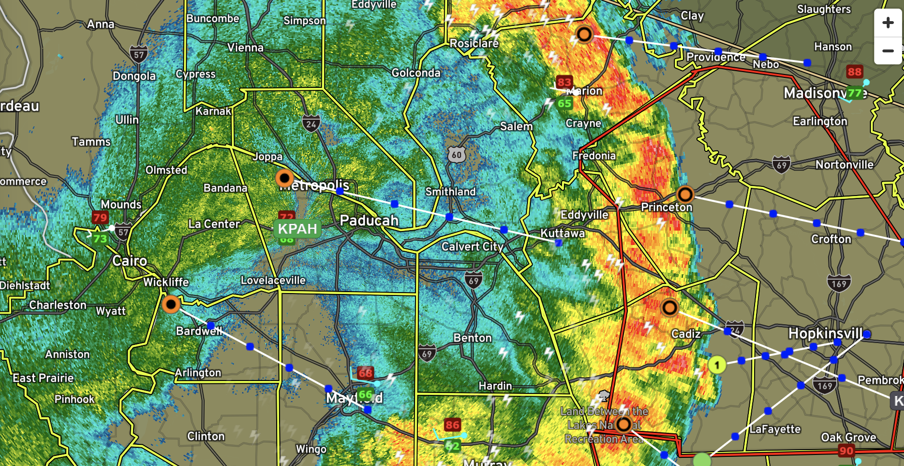
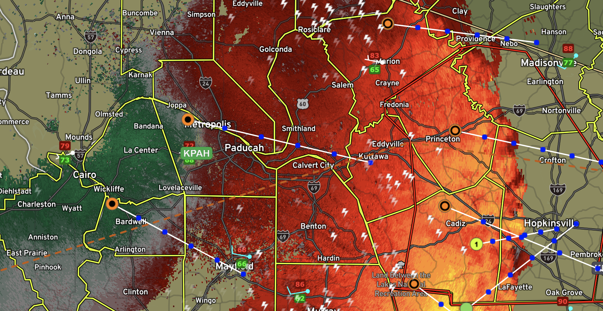
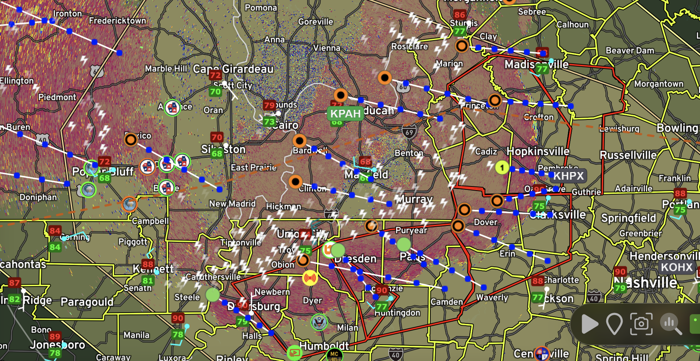
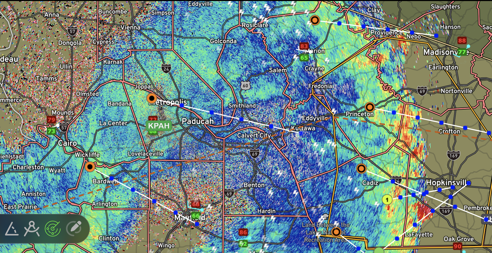
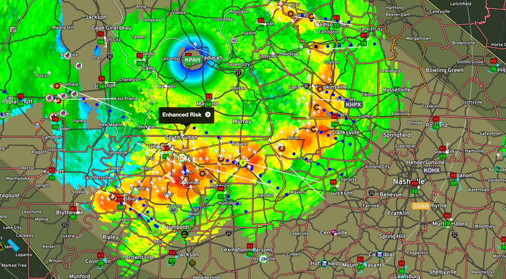
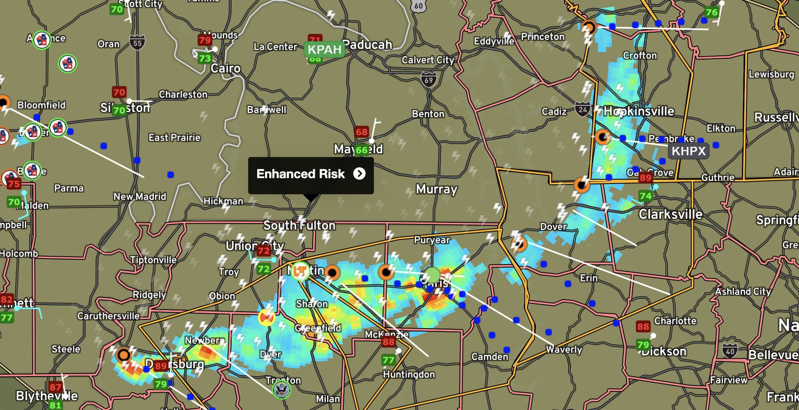

Hello welcome to my course in the beginning you will learn about radar modes
- Reflectivity Mode: This mode measures the intensity of the radar beam's energy reflected back to the radar from precipitation or other atmospheric targets. Reflectivity mode is useful for estimating precipitation rates, identifying the presence and intensity of precipitation (rain, snow, hail), and locating storm cells.
- Velocity Mode: By utilizing the Doppler effect, which measures the shift in frequency of the radar signal caused by the motion of precipitation particles, velocity mode provides information about the speed and direction of moving objects, such as raindrops or hail. It helps identify areas of rotation within storms, which is crucial for detecting and tracking severe weather phenomena like tornadoes
- Correlation Coefficient: Correlation coefficient is a measure of the similarity or dissimilarity between the horizontally polarized and vertically polarized radar signals. It helps meteorologists identify regions within a storm where precipitation particles are irregularly shaped or oriented. Low correlation values indicate the presence of mixed precipitation, such as rain and snow, or the presence of non-meteorological targets like debris or insects.

- Differential Reflectivity: Differential reflectivity (ZDR) is a metric that compares the horizontal and vertical polarizations of radar returns. It provides information about the shape and size of precipitation particles. Positive ZDR values indicate the presence of oblate (flattened) particles like raindrops, while negative values suggest the presence of elongated particles like hail or snowflakes. Differential reflectivity aids in classifying precipitation types and identifying potential areas of hail or intense rainfall.
- Echo Tops: Echo tops refer to the height or altitude above ground level where radar echoes are detected within a storm. By analyzing the vertical distribution of radar reflectivity, meteorologists can determine the maximum height of significant precipitation or convective activity. Echo tops help in assessing storm intensity, identifying areas of strong updrafts, and estimating the potential for severe weather development.

- Vertical Integrated Liquid (VIL): Vertical Integrated Liquid is a measure of the total amount of liquid water within a vertical column of the atmosphere. It is calculated by integrating the reflectivity values along the vertical extent of a storm. VIL provides an estimation of the total water content and intensity of precipitation within a storm. Higher VIL values generally indicate a more intense and potentially severe thunderstorm, suggesting the potential for heavy rainfall, large hail, or strong updrafts.

These radar measurements and parameters, such as correlation coefficient, differential reflectivity, echo tops, and vertical integrated liquid, assist meteorologists in characterizing storm structures, identifying severe weather signatures, and improving the accuracy of weather forecasts and warnings.